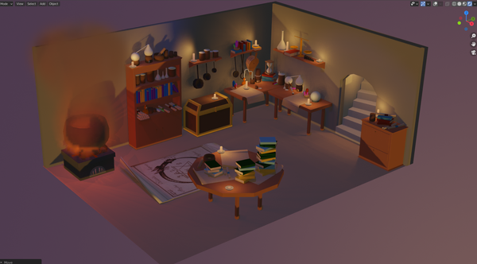

Projet Isoroom
Ce projet consistai à modéliser une pièce en vue isométrique avec des modèles low-poly sur le
thème de mon choix. Ici un
laboratoire d'alchimie caché dans un sous-sol.
Je tient à préciser qu'aucun éléments n'a été
repris d'une base de donnée et que chaque petite pièces sur les étagères ont été modélisé à la
main.
Fait avec Blender